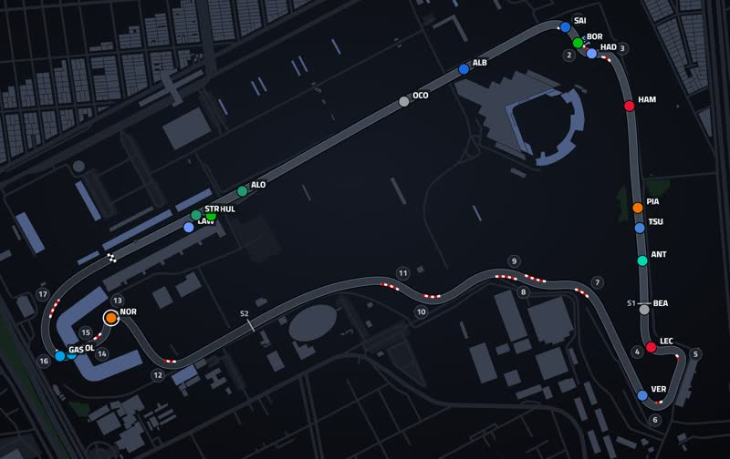

📱 Free to Race on your phone

Scan with your phone’s camera: the app opens and you install it with one tap. Free, no store, no account.
Scan with your phone’s camera: the app opens and you install it with one tap. Free, no store, no account.
Live timing, every car on the track, tyres and pit stops. On your phone and PC.
The site counts visits, without cookies: what and how →
▶Demo in your browser · nothing to install2025 United States GPThe whole race, with the map, timing and strategy
The calendar on the map, with the winners of the races already run.
| Pos | Driver | Team | Wins | Points |
|---|
| Pos | Team | Points |
|---|
It’s a bit like a certain Japanese engine: a rough start and a few too many breakdowns, but give it some patience and it can do great things. If you find a bug (or it won’t start at all), write to us! Every suggestion is welcome.
Found a bug? In the program use 🐞 Report a problem (in Choose session): it prepares the email with your version and the last lines of the log, and you see everything before sending.
On first launch Windows may say “Windows protected your PC”: it happens with programs that are not signed with a code-signing certificate, which costs money. Free to Race is free and made by one fan in spare time: it is not signed yet.
To open it: More info → Run anyway. Only the first time.
Every release on GitHub has a .sha256 file next to the installer with its fingerprint, to check that your download is the published file (how). The program on your PC counts nothing and sends nothing about you.
Privacy and safety: everything it connects to.
Free to Race is an independent, ad-free fan project, and every feature is free. If it keeps you company on race weekends, you can buy a coffee on Ko-fi: donations only, nothing to unlock.
☕ Buy me a coffee on Ko-fi